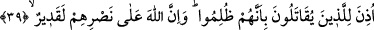
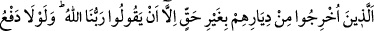
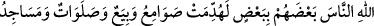
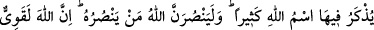
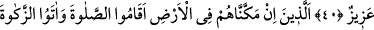
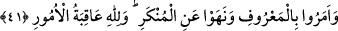

MÜ’MİNLERE SAVAŞ İZNİ
39. Kendileriyle savaşılanlara (mü’minlere), zulme uğramış olmaları sebebiyle,
(savaş konusunda) izin verildi. Şüphe yok ki Allah, onlara yardıma mutlak surette
kadirdir.
40. Onlar, başka değil, sırf «Rabbimiz Allah’tır» dedikleri için haksız yere
yurtlarından çıkarılmış kimselerdir. Eğer Allah, bir kısım insanları (kötülüklerini)
diğer bir kısmı ile defedip önlemeseydi, mutlak surette, içlerinde Allah’ın ismi bol
bol anılan manastırlar, kiliseler, havralar ve mescidler yıkılır giderdi. Allah,
kendisine (kendi dinine) yardım edenlere muhakkak surette yardım eder. Hiç
şüphesiz Allah, güçlüdür, galiptir.
41. Onlar (o müminler) ki, eğer kendilerine yeryüzünde iktidar verirsek namazı
kılar, zekâtı verirler, iyiliği emreder ve kötülükten nehyederler. İşlerin sonu
Allah’a varır.
“Kendileriyle savaşılanlara” yâni müşriklerin kendileriyle savaştığı mü’minlere,
“zulme uğramış olmaları sebebiyle,” savaş konusunda “izin” ruhsat “verildi.” Bir
konuda izin vermek, ona icâzet, yetki ve ruhsat verdiğini bildirmektir. Zulme uğrayanlar,
onlar Hz. Peygamber (a.s.)’ın ashâbıdır. Müşrikler onlara eziyet ediyor, onlar da
Efendimiz (a.s.)’ın huzûruna kimi darb edilmiş, kimi de yaralanmış halde geliyorlar ve
uğradıkları zulümden şikayet ediyorlardı. Efendimiz (a.s.) da onlara: “Sabredin, çünkü
ben savaşmakla emrolunmadım.”[37] buyururdu. Sonunda hicret ettiler ve bu âyet nâzil
oldu. Bundan sonra savaş konusunda inen yetmiş küsur âyetin ilki bu âyettir.
“Şüphe yok ki Allah, onlara yardıma mutlak surette kadirdir.” Allah, mü’minlere
müşriklerin eziyetlerini uzaklaştırıp onları müşriklerin ellerinden kurtarmayı vaad
ettikten sonra onlara zaferi ve kendilerini müşriklere galip kılmayı vaad etmiştir.
Râğıb der ki: İnsan kudret ile vasfedildiği zaman bu, kendisiyle herhangi bir şeyi
yapabildiği durumun ismidir. Allah kudret ile vasfedildiğinde ise bu, ondan acziyeti